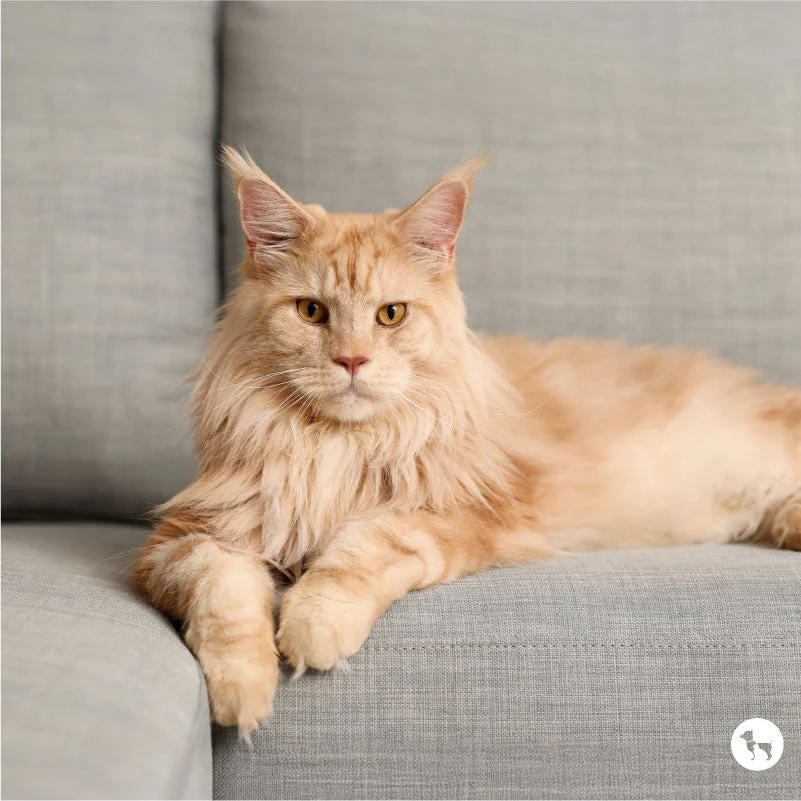
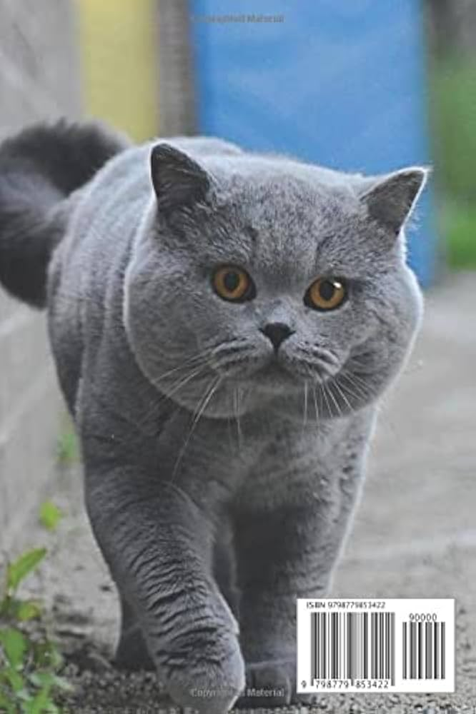

Persian Cat

- Long, fluffy fur
- Flat face, big eyes
- Calm, quiet, loves relaxing indoors
Siamese Cat

- Short coat with dark points (ears, face, tail)
- Very vocal and social
- Intelligent and playful
Maine Coon

- One of the largest cat breeds
- Friendly and gentle (“gentle giant”)
- Thick fur and bushy tail
Bengal Cat

- Leopard-like spots
- Very energetic and athletic
- Loves climbing and playing
British Shorthair

- Round face and chubby cheeks
- Plush short coat
- Calm, easygoing personality
Scottish Fold

- Folded ears
- Cute, teddy-bear look
- Sweet and affectionate